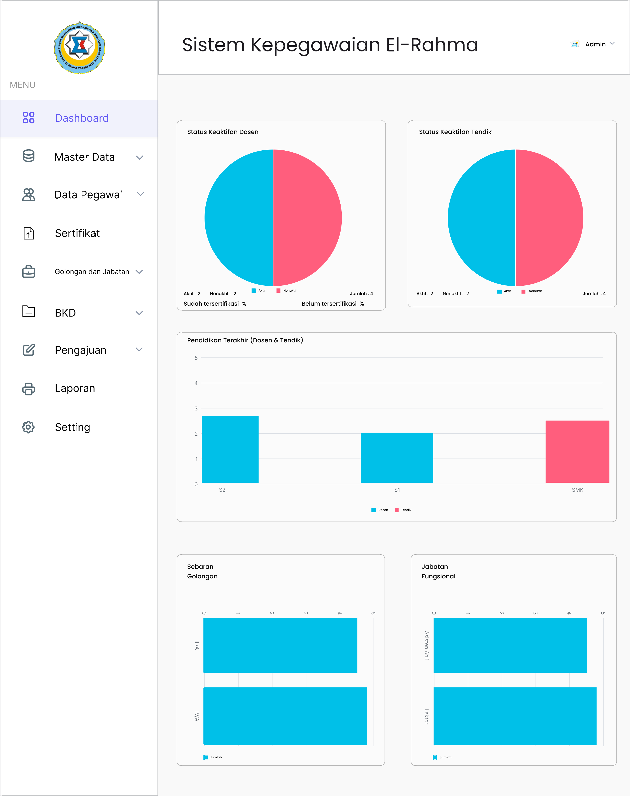
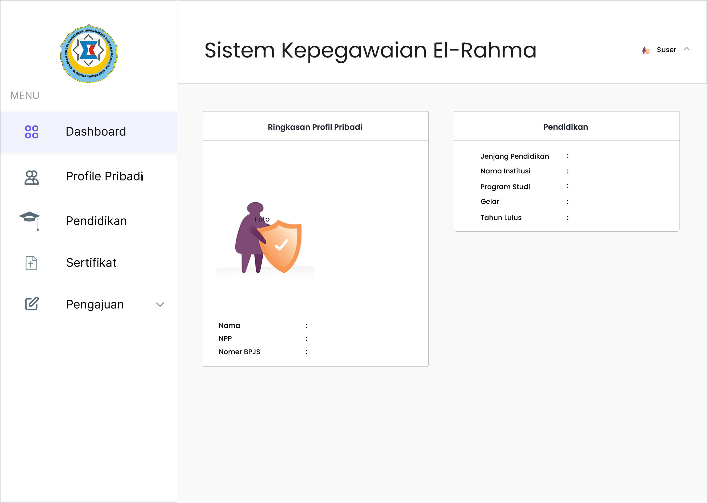
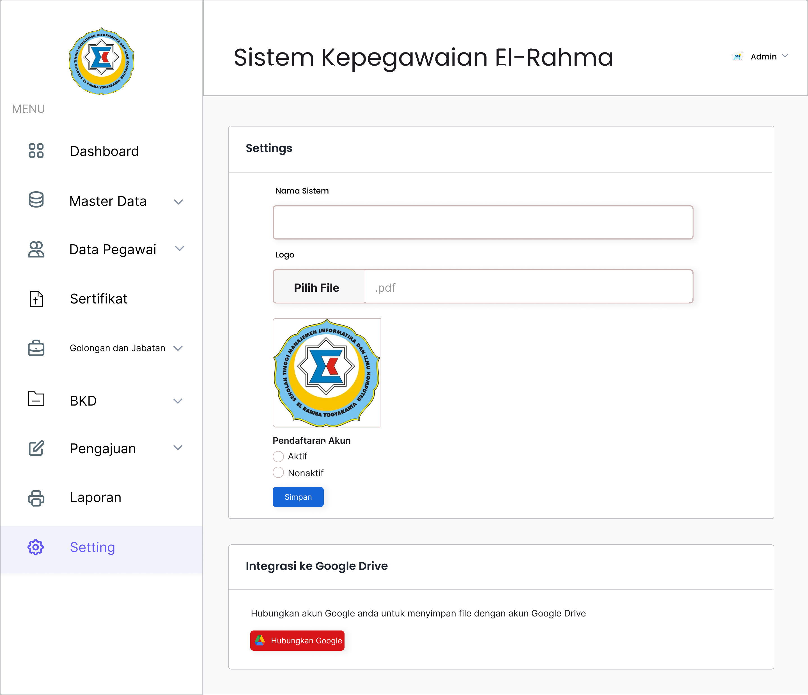
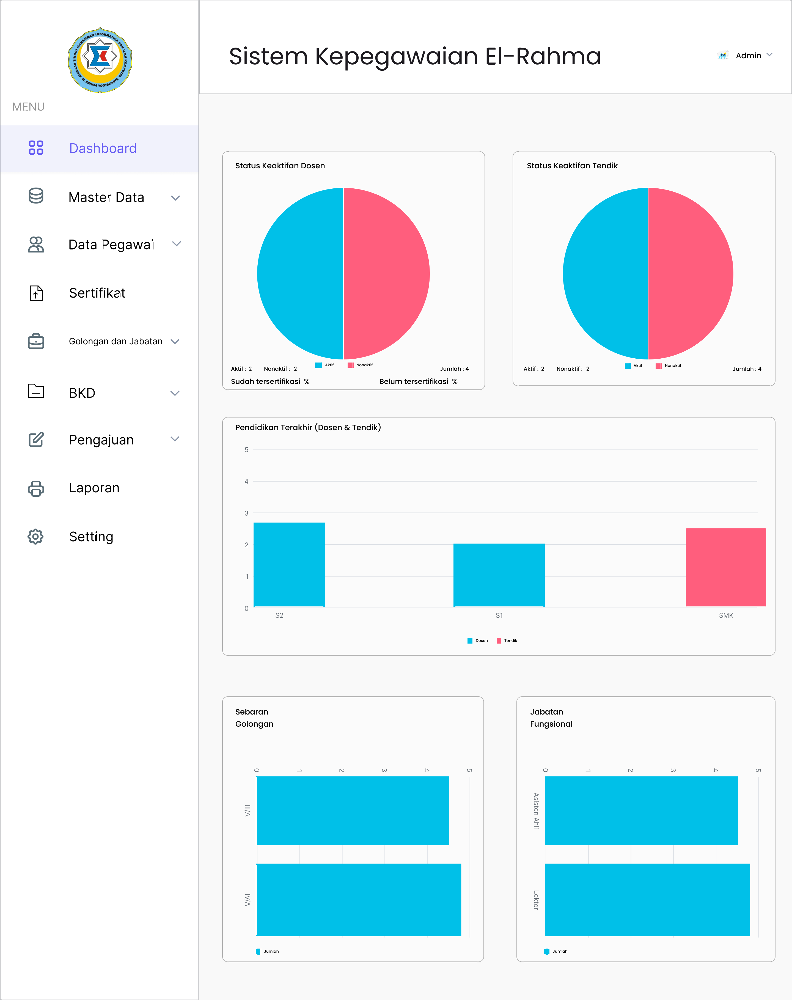
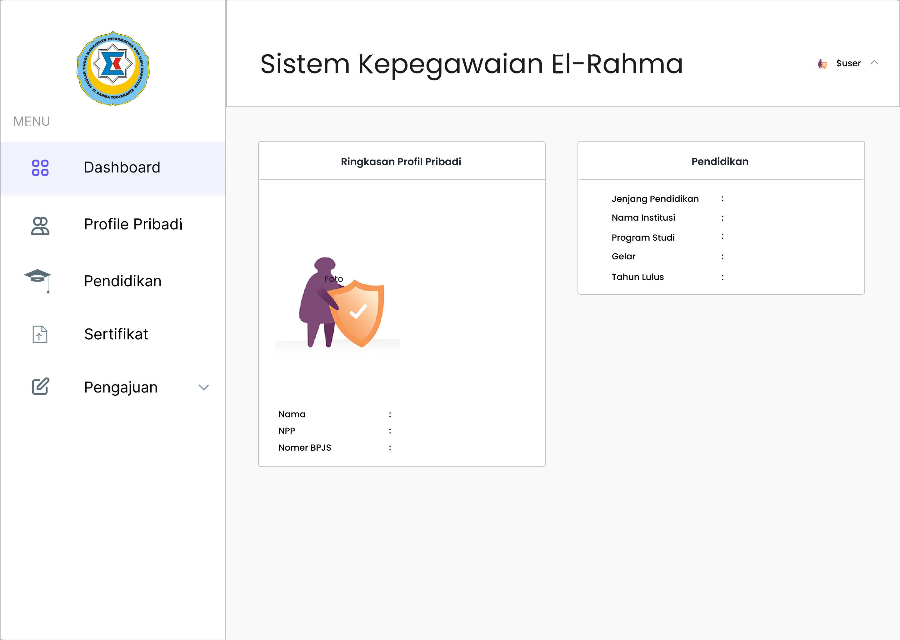
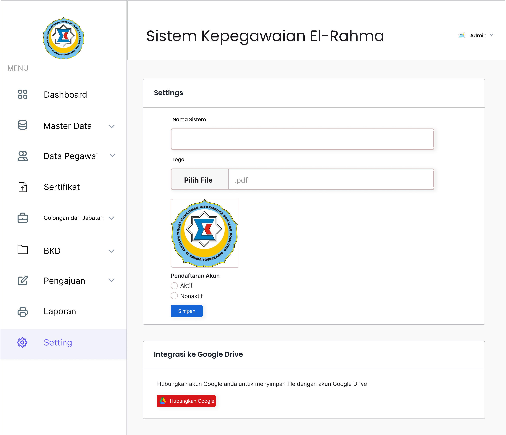

Overview
SIMPEG El-Rahma is a web-based employee management system designed to help manage personnel data and official documents at STMIK El Rahma Yogyakarta. The system focuses on improving administrative efficiency by organizing employee information, documents, and workflows in a centralized digital platform.
Problem
Employee data and document management were previously handled manually or using fragmented systems, making it difficult to track documents, ensure data consistency, and retrieve information efficiently. This often resulted in slow administrative processes and data redundancy.
Solution
SIMPEG El-Rahma provides a structured web-based solution with a clear and user-friendly interface. The system allows administrators and staff to manage employee data and documents efficiently, reducing manual work and improving data accessibility.
My Contribution
- Designed user interface and user experience for employee data and document management features
- Created wireframes and high-fidelity designs using Figma
- Defined user flows for admin and staff roles
- Ensured clarity, consistency, and usability across all system pages
- Applied basic UX principles to improve efficiency and ease of use
UI Preview
 





Project Links
What I Learned
This project helped me understand how to design a web-based information system tailored to institutional needs. I improved my ability to map business processes into structured user flows and design interfaces that support administrative efficiency.
I also strengthened my skills in translating system requirements into clear UI components and organizing complex information into a user-friendly layout.